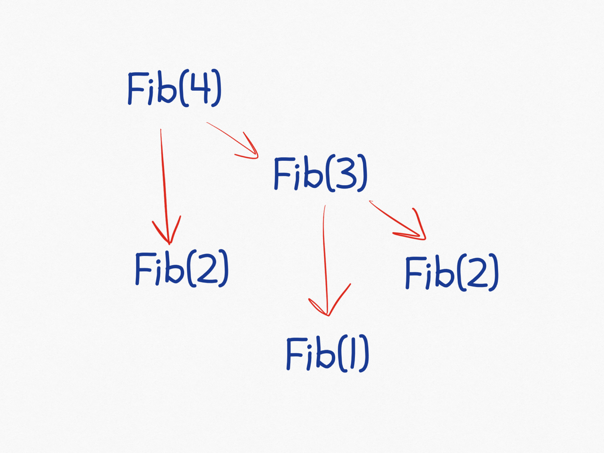

Exercises (CT Chapter 7)
I don’t really have a lot of exercises for the chapter on recursion. I had planned to combine recursion with divide-and-conquer, but now the two topics are split over two weeks. Instead, I will have a project for the students to do while they learn about recursion; then it doesn’t matter so much that there are not that many exercises.
Anyway, exercises below and answers below that.
Exercises
Fibonacci
Exercise: Implement a recursive function that computes the n’th Fibonacci number.
Exercise: Draw the call stack for computing the fourth Fibonacci number using the implementation you did in the previous exercise.
List exercises
Exercise: To compute the sum of the elements in a list, we can obviously do this iteratively:
result = 0
for e in x:
result += eImplement a recursive function that computes the sum of the elements of a list.
Exercise: We can find the smallest element in a non-empty list, x, like this:
smallest = x[0]
for e in x:
smallest = min(smallest, e)Write a recursive function for finding the smallest element in a list. To avoid copying the list using slices, you will want to have the function take an index parameter as an argument.
Exercise: Modify your function, so it returns None if the list is empty. The easiest way to do this is probably to include the “smallest element seen so far” as a parameter to the function, with a default value of None. To compute the smallest value and still handle None you can use this function:
def my_min(x, y):
return y if x is None else min(x, y)Exercise: Write a recursive function that reverses a list.
Exercise: Recall the exercise where you had to translate a base-10 number into some other base b (where we restricted the base to be less than 16). We can get the last digit of a number i, in base b using this function:
def get_last_digit(i, b):
return digits[i % b]where we defined the digits list as
digits = {}
for i in range(0,10):
digits[i] = str(i)
digits[10] = 'A'
digits[11] = 'B'
digits[12] = 'C'
digits[13] = 'D'
digits[14] = 'E'
digits[15] = 'F'We can then reduce the problem to the second-to-last digit by dividing i by b. Implement this idea using a recursive function.
Tail-Recursion
Exercise: Rewrite your recursive function for computing the sum of a list of numbers such that it becomes tail-recursive.
Exercise: Rewrite your recursive function for finding the smallest element in a list to a version that is tail-recursive.
Exercise: Do the tail-recursion transformation for your tail-recursive summation function.
Exercise: Do the tail-recursion transformation for your tail-recursive “find minimum” function.
Exercise: Consider our recursive implementation of binary search:
def bsearch(x, e, low = 0, high = len(x)):
if low >= high:
return False
mid = (low + high) // 2
if x[mid] == e:
return True
elif x[mid] < e:
return bsearch(x, e, mid + 1, high)
else:
return bsearch(x, e, low, mid)This function is tail-recursive, so use the transformation to replace it with a loop. Compare it to the iterative solution we considered before this chapter.
Answers
Fibonacci
Exercise: Implement a recursive function that computes the n’th Fibonacci number.
def Fib(n):
if n <= 2: return 1
else: return Fib(n - 1) + Fib(n - 2)Exercise: Draw the call stack for computing the fourth Fibonacci number using the implementation you did in the previous exercise.

List exercises
Exercise: To compute the sum of the elements in a list, we can obviously do this iteratively:
result = 0
for e in x:
result += eImplement a recursive function that computes the sum of the elements of a list.
def recsum(x):
if x == []: return 0
else: return x[0] + recsum(x[1:])Exercise: We can find the smallest element in a non-empty list, x, like this:
smallest = x[0]
for e in x:
smallest = min(smallest, e)Write a recursive function for finding the smallest element in a list. To avoid copying the list using slices, you will want to have the function take an index parameter as an argument.
def min_rec(x, i = 0, acc = None):
if i == len(x): return acc
acc = x[i] if acc is None else min(acc, x[i])
return min_rec(x, i + 1, acc)Exercise: Modify your function, so it returns None if the list is empty. The easiest way to do this is probably to include the “smallest element seen so far” as a parameter to the function, with a default value of None. To compute the smallest value and still handle None you can use this function:
def my_min(x, y):
return y if x is None else min(x, y)My solution from above already works this way.
Exercise: Write a recursive function that reverses a list.
def reverse_rec(x, acc = []):
if x == []: return acc
return reverse_rec(x[1:], [x[0]] + acc)This implementation is very inefficient due to how Python lists are implemented. It would be very efficient if we used linked lists. With array-like vectors, we wouldn’t usually need recursion—it is easier to solve that reversal problem iteratively.
Exercise: Recall the exercise where you had to translate a base-10 number into some other base b (where we restricted the base to be less than 16). We can get the last digit of a number i, in base b using this function:
def get_last_digit(i, b):
return digits[i % b]where we defined the digits list as
digits = {}
for i in range(0,10):
digits[i] = str(i)
digits[10] = 'A'
digits[11] = 'B'
digits[12] = 'C'
digits[13] = 'D'
digits[14] = 'E'
digits[15] = 'F'We can then reduce the problem to the second-to-last digit by dividing i by b. Implement this idea using a recursive function.
def to_base(n, b, rev_digits = None):
# get an empty list if argument is None
rev_digits = rev_digits or []
if n == 0:
if rev_digits == []: return "0"
return "".join(reversed(rev_digits))
else:
rev_digits.append(digits[n % b])
return to_base(n // b, b, rev_digits)Tail-Recursion
Exercise: Rewrite your recursive function for computing the sum of a list of numbers such that it becomes tail-recursive.
def recsum_tr(x, acc = 0):
if x == []: return acc
else: return recsum_tr(x[1:], acc + x[0])Exercise: Rewrite your recursive function for finding the smallest element in a list to a version that is tail-recursive.
def min_rec(x, i = 0, acc = None):
if i == len(x): return acc
acc = x[i] if acc is None else min(acc, x[i])
return min_rec(x, i + 1, acc)Exercise: Do the tail-recursion transformation for your tail-recursive summation function.
def recsum_tr(x, acc = 0):
while True:
if x == []: return acc
x, acc = x[1:], acc + x[0]Exercise: Do the tail-recursion transformation for your tail-recursive “find minimum” function.
def min_rec(x, i = 0, acc = None):
while True:
if i == len(x): return acc
acc = x[i] if acc is None else min(acc, x[i])
i += 1Exercise: Consider our recursive implementation of binary search:
def bsearch(x, e, low = 0, high = len(x)):
if low >= high:
return False
mid = (low + high) // 2
if x[mid] == e:
return True
elif x[mid] < e:
return bsearch(x, e, mid + 1, high)
else:
return bsearch(x, e, low, mid)This function is tail-recursive, so use the transformation to replace it with a loop. Compare it to the iterative solution we considered before this chapter.
The direct translation is this:
def bsearch(x, e, low = 0, high = len(x)):
while True:
if low >= high:
return False
mid = (low + high) // 2
if x[mid] == e:
return True
elif x[mid] < e:
return bsearch(x, e, mid + 1, high)
else:
return bsearch(x, e, low, mid)If we just change the loop condition we get the usual function:
def bsearch(x, e, low = 0, high = len(x)):
while low < high:
mid = (low + high) // 2
if x[mid] == e:
return True
elif x[mid] < e:
return bsearch(x, e, mid + 1, high)
else:
return bsearch(x, e, low, mid)
return False